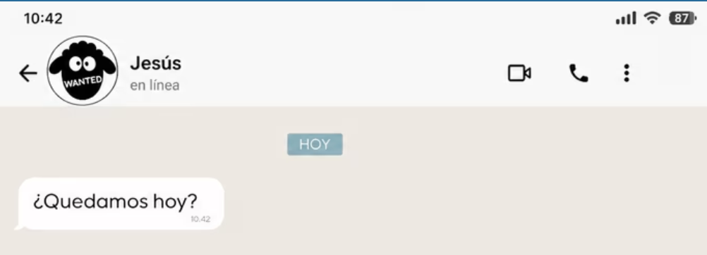

Descubre cómo transformar la rutina de tu hogar en una escuela de virtudes. Historias de fe, resiliencia y el valor de las pequeñas cosas.
Hubo un momento en que la mesa familiar y las charlas en la cocina parecían desaparecer frente a las pantallas. Esta es una invitación a recuperar nuestro centro. Aprenderás de vivencias reales cómo un legado familiar, marcado por figuras ilustres y la fe cotidiana, puede iluminar tu propia historia.
Herramientas prácticas para superar obstáculos fortaleciendo el núcleo de tu hogar.
Historias nunca antes contadas sobre figuras que moldearon nuestra sociedad.
Ideas claras para aplicar en tu vida, desde rezar hasta el valor del trabajo bien hecho.
La cocina rompió sus paredes. Ya no es solo donde se prepara la comida, sino donde se amasan las historias de la familia. ¿Sobrevives a la rutina o te atreves a disfrutar al máximo?
Leer "Bailar en la cocina"Un recorrido por la vida de un hombre que marcó la historia del país. Conoce las bases de un legado de integridad, trabajo y profundo amor por Venezuela que sigue vigente en las nuevas generaciones.
Leer artículos sobre su obraEducar la mirada para ver lo extraordinario en lo ordinario. Descubre cómo integrar la fe de manera natural, desde cómo interactuamos con el arte hasta cómo rezamos en la vida diaria.

¿Te imaginas que tu vida entera fuera un tema de chat con tu mejor amigo?
Leer en Opus DeiLa luz que llevaban los santos de la vida normal. Un brillo que no depende de los likes.
Leer en Opus DeiSoy periodista, humanista y, sobre todo, una apasionada por la familia. Fuera de las páginas y los artículos, me encuentras disfrutando del bullicio de una mesa compartida o buscando la belleza en los detalles más simples del día a día.
Creo firmemente que el hogar es el primer lugar donde cambiamos el mundo. Mi objetivo es compartir estas experiencias para que encuentres inspiración en tu propia rutina.
"Sus textos me hicieron replantearme cómo vivo mi día a día. La forma en que habla de la cocina me devolvió las ganas de reunir a mi familia."
— María F., Lectora
"El relato sobre su padre es una pieza histórica y profundamente humana. Un recordatorio necesario de nuestros valores como sociedad."
— Revista Literaria
Comienza a transformar tu visión del hogar y descubre las raíces que te anclan a lo verdaderamente importante.
Adquirir el Libro Ahora